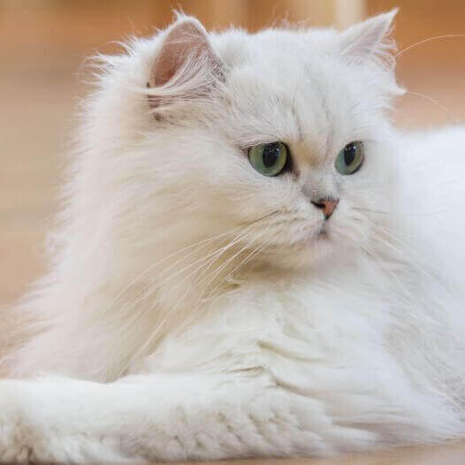
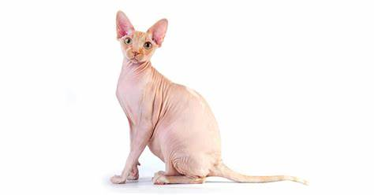
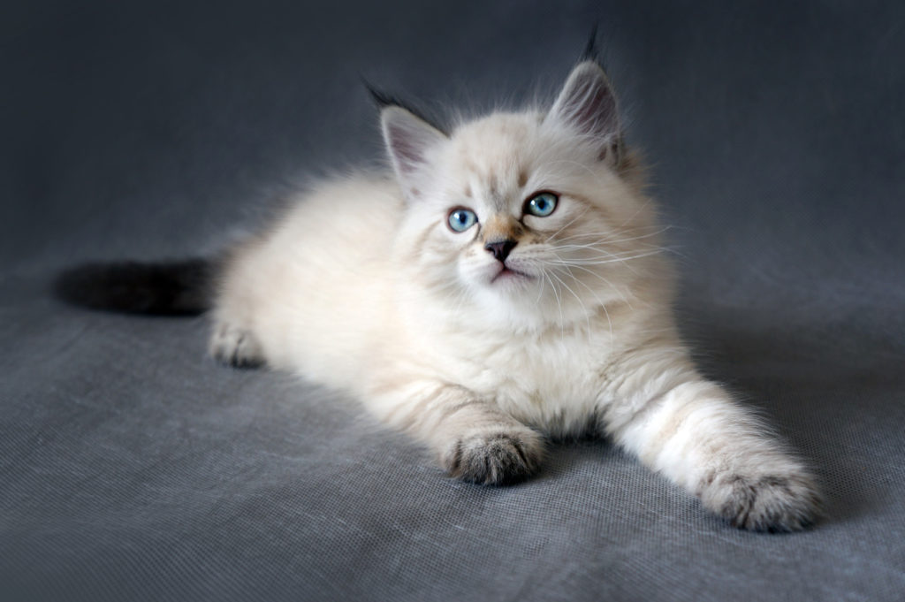

Razas de gatos
Los gatos llevan milenios viviendo con los humanos, pero se empezaron a criar selectivamente hace poco. A finales del siglo XIX, las primeras exposiciones felinas estimularon la creación de clubes de raza en Europa y Norteamérica.Las primeras razas de gato fueron las que se habían desarrollado de forma natural, pero los criadores pronto empezaron a usar sus conocimientos de las pautas hereditarias para crear una paleta de colores y dibujos de pelaje. Esta reciente intervención humana, mediante la cría selectiva del gato, ha producido algunos resultados notables.
Click aquí para volver al Indice

Gatos persas
Reconocemos fácilmente al gato persa por su cara ancha y aplanada junto al abundante pelaje, que puede ser de distintos colores. Esta raza de gatos fueron introducidos en Italia desde la antigua Persia (Irán actualmente) sobre el año 1620, aunque se desconoce el auténtico origen. El estándar del gato persa actual, tal y como lo conocemos, se fijó en 1800 en Inglaterra y proviene de la raza de gato angora turco. No dudes en seguir leyendo esta ficha completa del gato persa y sus características, su origen y curiosidades, entre otras cosas, para poder tener una información más completa sobre él.
Tal y como hemos comentado en la introducción, el origen del gato persa es bastante desconocido y sin exactitud. Los antepasados de dicho gato los remontamos al año 1620, en Italia, donde fueron importados desde Persia y Jorasán por Pietro della Valle. Por otro lado, Nicholas Claude Fabri de Peiresc también exportó el gato de Angora (la actual Ankara, capital de Turquía) a Francia. A partir de aquí pasó a Gran Bretaña y se fue expandiendo por otros países.
Click aquí; para volver al Indice
Gato Siamés
El gato siamés probablemente sea una de las razas de gatos más populares del mundo actual. El azul intenso de su mirada hace que nos quedemos embobados mirándolo y, si a eso le sumamos la combinación de colores en su pelaje, el resultado es un esbelto, elegante y adorable gato que nos roba el corazón.
El gato siamés se trata de un felino originario de Tailandia que cuenta con dos variaciones, el siamés que trataremos, y el siamés thai o tradicional. Aunque las características de ambos son similares, realmente existen diferencias entre uno y el otro. De hecho, incluso hay gente que los confunde entre sí. Para que no te pase lo mismo, sigue leyendo esta ficha de ExpertoAnimal sobre la raza de gato siamés, su origen, características y cuidados, entre otras cosas.
Click aquí; para volver al Indice
Gato Azul Ruso
El gato azul ruso es sin duda uno de los felinos más populares y hermosos. Si estás pensando en adoptar a un gato de esta raza será conveniente que te informes antes acerca de su carácter, del cuidado del pelo o de las características que posee. En ExpertoAnimal te explicaremos todo lo que necesitas saber sobre el gato azul ruso, incluyendo los tipos, fotografías e información de interés acerca de sus cuidados.
Existen diversas teorías acerca del origen del gato azul ruso, pero la más popular sin duda es la del gato arcángel. Las primeras menciones acerca de esta raza explican cómo se encontraron los primeros ejemplares de gato azul ruso en las ciudades portuarias del norte de Rusia, en las islas arcángel. De ahí su apodo. Otra historia apunta a que la raza se había mantenido en secreto durante generaciones por ser considerado un gato muy exclusivo, que únicamente debería acompañar a los Zares.
Click aquí; para volver al Indice
Gato Esfinge
El gato sphynx o gato esfinge es un gato realmente único en el mundo. Fue el primero en ser aceptado como raza sin pelo o sin pelaje aparente y lo que es seguro, es que crean agrado y desagrado a la vez por parte de la sociedad humana. Muchos profesionales sugieren que proviene de la raza de gato devon rex, con la que comparten características muy similares. Aparecieron de forma natural a lo largo de la historia ya que su falta de pelaje es causa de una mutación, un proceso común en la evolución de cualquier especie. Fue en Canadá, cuando en los años 60 decidieron fijar y mantener las características de los gatos que no parecían tener pelo.
Sabemos que una de las mayores incógnitas que rodean al gato esfinge es su ausencia de pelo. ¿De dónde viene esta raza de gato sin pelo? Los orígenes del gato sphynx o esfinge se remontan a hace relativamente pocos años, exactamente, a la década de los años 60.
El gato sphynx se originó a través de cruces selectivos entre diferentes razas de gatos, incluyendo gatos domésticos, gatos siameses y gatos devon rex, con el objetivo de crear una raza con un pelaje mínimo o ausente. Los gatos resultantes con esta apariencia única se seleccionaron y criaron para establecer la raza. Básicamente, el gato sphynx o gato esfinge debe su característica esencial de no poseer un manto de pelo a un gen dominante.
Click aquí; para volver al Indice
Gato Siberiano
De abundante manto y mirada penetrante, el gato siberiano se ha convertido en una de las razas felinas más populares y apreciadas en todo el mundo. Su temperamento equilibrado y sus características físicas, lo han convertido, además, en uno de los compañeros ideales para personas de todo tipo. Sin embargo, y a pesar de resultar un felino con mucha antigüedad, su reconocimiento oficial data de los años 90.
El gato siberiano es uno de los denominados “gatos de bosque”, junto con el maine coon y el bosque de Noruega, dado que los ejemplares de esta raza se expanden por las frondosas arboledas de Rusia y Ucrania. Se cree que proviene del cruce de gatos domésticos llevados a Rusia y Ucrania con gatos salvajes de los bosques siberianos, de ahí que también se le denomine "bosque de Siberia".
Click aquí; para volver al Indice
